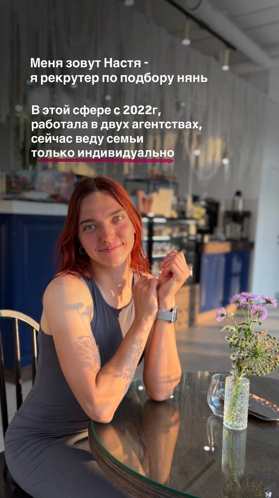

Обсуждаем запрос
Уточняем график, обязанности, возраст ребёнка и правила вашей семьи.
Беру на себя поиск, собеседования и проверку рекомендаций. По каждому кандидату готовлю подробный профиль и личные комментарии.

«Я собеседую няню не в общих чертах, а под конкретную вакансию»
Уточняем график, обязанности, возраст ребёнка и правила вашей семьи.
Задаю вопросы под вашу вакансию: об уходе за малышом, уроках или конфликтах между детьми.
Готовлю подробные профили с личными комментариями. Обсуждаем опыт, подход к детям и вопросы для встречи.
С 2022 года подбираю нянь для семей. Работала в двух агентствах, сейчас веду подбор самостоятельно.
До этого пять лет работала с детьми: няней, тренером и педагогом. Этот опыт помогает учитывать запрос родителей и повседневные задачи няни.

От обсуждения запроса до первых недель работы няни.
Обсуждаем возраст ребёнка, график, обязанности и ваши ожидания.
Для семьи: Согласованные требования к няне.
Отбираю кандидатов и собеседую под вашу вакансию. Уточняю опыт и рекомендации.
Для семьи: Кандидатуры, подходящие по опыту, условиям и подходу к детям.
Готовлю подробные профили. Обсуждаем мои комментарии и ваши вопросы.
Для семьи: Информация для выбора кандидатов, с которыми вы хотите встретиться.
Помогаю организовать встречи и обсудить первые дни работы.
Для семьи: Возможность оценить няню в повседневных задачах вашей семьи.
Остаюсь на связи после выхода няни и помогаю с возникающими вопросами.
Для семьи: Поддержка и бесплатная замена в течение 6 месяцев.
от 25 000 ₽
Полная оплата после 1–2 пробных недель. Ориентир поиска — 1–1,5 месяца.
Обсудить подбор5 500 ₽
Продолжительность консультации — 1,5–2 часа.
Обсудить консультациюСтоимость и сроки уточняются перед началом работы.
«Настя помогла нам найти няню для дочки. Очень внимательная, задаёт правильные вопросы, быстро понимает, что важно именно нашей семье.»
«Мы искали няню через агентства, но Настя подобрала нам кандидата из своей базы. Очень благодарны за подход и поддержку!»
«Добрый вечер! Отлично, Настя, спасибо! Юра вчера весь вечер спрашивал, когда вы ещё придёте, кроме сегодня 🙂»
Укажите возраст ребёнка, график и то, какая помощь нужна вашей семье.
Написать в Telegram